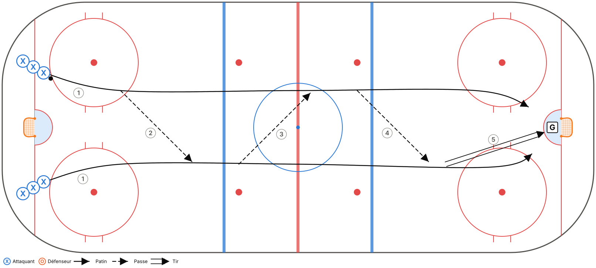
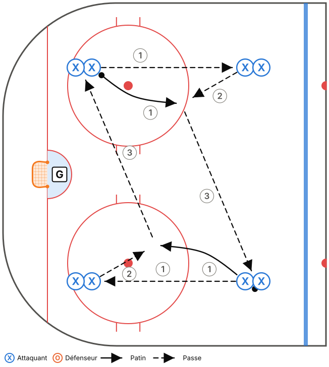
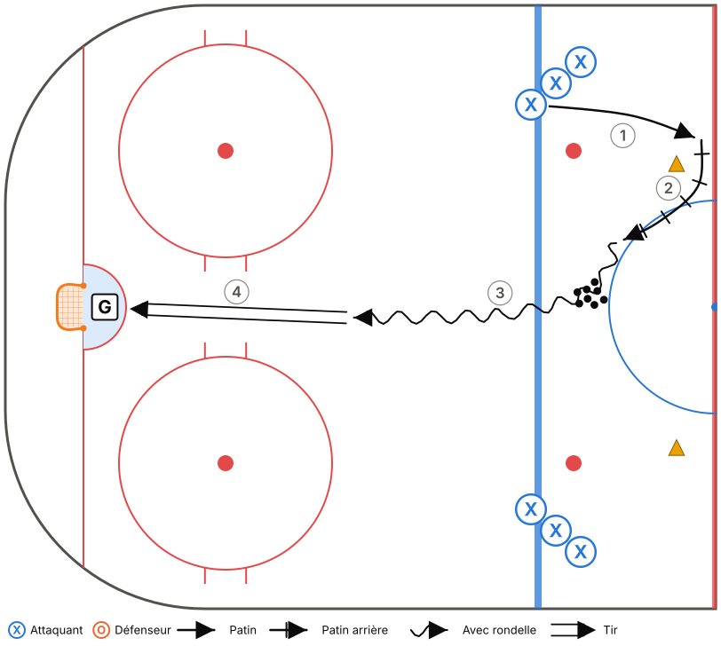
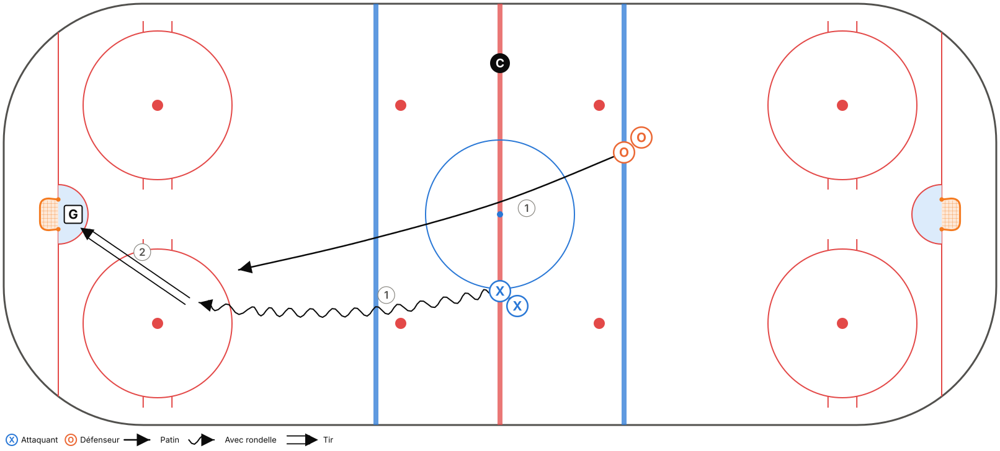
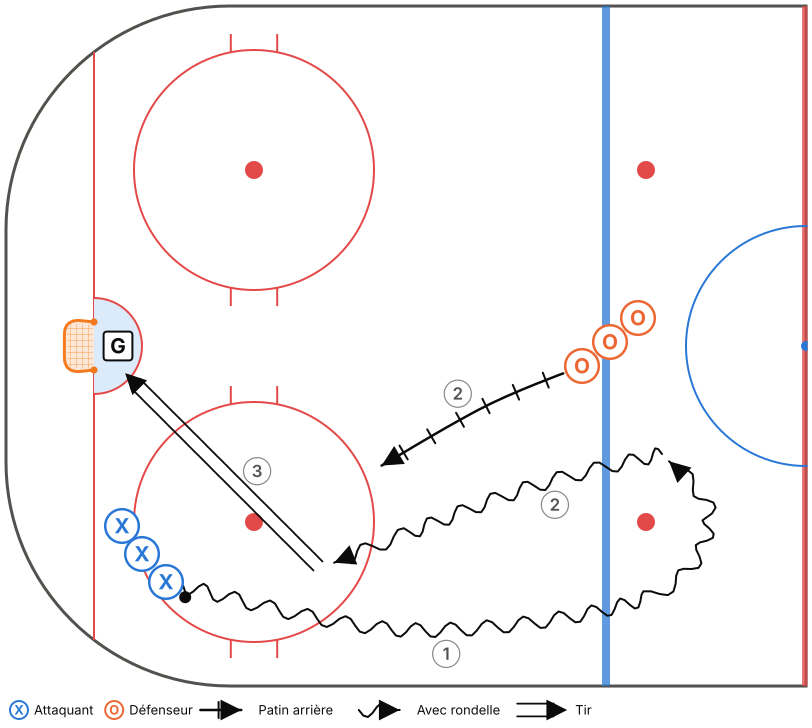

Thème : Sortie de zone : MUR – MILIEU – REVERS
Glace : Demi-glace, 50 min (45 min d'exercices + 5 min de consignes et transitions)
Fiche générée à partir de
outils/modeles.js. Pour la modifier, ouvreoutils/plan-pratique.htmlet charge le modèle « M11-B – Semaine 2 ».
Objectifs
- Introduire la sortie de zone (phase 1).
- Repli par le milieu.
- Rappel de la zone défensive (semaine 1).
Tableau (vestiaire)
Vestiaire (3 min) : dessiner la sortie de zone, les 3 options et les 3 mots. Question : « Pourquoi jamais de passe au milieu de notre enclave? »
Déroulement
| Heure | Code | Exercice | Catégorie | Min | Notes |
|---|---|---|---|---|---|
| 0:00–0:05 | T01 | Échauffement aux cercles – croisés avant et arrière | Technique | 5 | Demi-glace : 3 groupes. |
| 0:05–0:11 | T04 | Passes en mouvement – 2 lignes | Technique | 6 | Départ de la ligne rouge. 2e minute : passes du revers seulement. |
| 0:11–0:17 | T16 | Carré de passes (4 coins, 2 rondelles) | Technique | 6 | Passer à 2 rondelles rapidement. |
| 0:17–0:23 | T08 | Tir après pivot | Technique | 6 | |
| 0:23–0:28 | TI06 | Repli 1c1 – rondelle, homme, filet | Tactique individuelle | 5 | Départ à la ligne rouge. Insister : revenir par le MILIEU, pas le long de la bande. |
| 0:28–0:34 | TI01 | 1c1 bande à bande – contrôle de l'écart | Tactique individuelle | 6 | Tout le monde joue les deux rôles (avants aussi en défense). |
| 0:34–0:40 | TC01 | Sortie de zone 5c0 – MUR, MILIEU, REVERS | Tactique collective | 6 | Sortie réussie à la ligne rouge, virage, puis attaque du même filet. Ralenti → vitesse. Au début, le coach annonce l'option. Ensuite, le D décide. |
| 0:40–0:45 | TC11 | Petits jeux à règles (cross-ice) | Tactique collective | 5 | Règle : après une récupération, la rondelle doit passer par un joueur au MUR avant un tir. |
Répartition du temps
| Catégorie | Minutes | % réel | Cible Hockey Québec |
|---|---|---|---|
| Technique | 23 | 51,1 % | 50 % ✓ |
| Tactique individuelle | 11 | 24,4 % | 25 % ✓ |
| Tactique collective | 11 | 24,4 % | 25 % ✓ |
Détail des exercices
T01 – Échauffement aux cercles – croisés avant et arrière
Technique · Pleine glace

Objectif : Réchauffer et travailler les croisés dans les deux sens.
Organisation : Un groupe par cercle (5 cercles). Aucune rondelle, puis avec rondelle.
Adaptation demi-glace : Utiliser les 2 cercles de la zone et le demi-cercle central : 3 groupes au lieu de 5.
- Croisés avant autour du cercle, 2 tours dans chaque sens.
- Croisés arrière, 2 tours dans chaque sens.
- Au sifflet, sprint vers le cercle suivant.
- Reprendre avec rondelle.
Points clés : Genoux fléchis · Pousser avec le pied de l'extérieur ET le pied de l'intérieur · Tête haute
T04 – Passes en mouvement – 2 lignes
Technique · Pleine glace

Objectif : Passes et réceptions en patinant, du coup droit et du revers.
Organisation : 2 lignes sur la ligne des buts, une de chaque côté. Les paires partent ensemble.
Adaptation demi-glace : Partir de la ligne rouge, passes jusqu'au filet, tir. Retour le long de la bande jusqu'à la ligne rouge.
- Les 2 joueurs patinent en parallèle (environ 5 m d'écart) et échangent la rondelle jusqu'à l'autre bout.
- Tir au but à la fin, les 2 joueurs vont au filet.
- Retour par la bande.
Points clés : Passer DEVANT le receveur (dans sa trajectoire) · Recevoir avec la palette « molle » · Garder la vitesse
T16 – Carré de passes (4 coins, 2 rondelles)
Technique · Zone

Objectif : Passes en mouvement et réception à haute vitesse, beaucoup de répétitions.
Organisation : 4 files dans les 4 coins d'un carré (zone). 2 rondelles partent en même temps de coins opposés.
- Le joueur passe à la file suivante (sens horaire), puis patine vers cette file.
- Il reçoit une remise et la passe au coin suivant.
- Changer de sens après 1 minute.
Points clés : Passe devant le receveur · Recevoir en patinant · Communiquer
T08 – Tir après pivot
Technique · Demi-glace

Objectif : Tirer rapidement après un changement de direction.
Organisation : 2 files à la ligne bleue. Des rondelles au centre. Un gardien.
- Le joueur patine vers la ligne rouge, pivote vers l'arrière autour d'un cône, puis pivote vers l'avant.
- Il récupère une rondelle (ou reçoit une passe du coach) et tire en mouvement.
- Il va au rebond.
Points clés : Tirer sans ralentir · Viser les coins bas · Toujours suivre son tir
TI06 – Repli 1c1 – rondelle, homme, filet
Tactique individuelle · Pleine glace · Décisionnel (IQ)

Objectif : Revenir en défense par le milieu et se placer entre son adversaire et le filet.
Organisation : Attaquant avec rondelle à la ligne rouge, défenseur (un avant) à la ligne bleue adverse qui doit revenir.
Adaptation demi-glace : L'attaquant part de la ligne rouge. L'avant en repli part aussi de la ligne rouge, 2-3 m derrière, et revient par le milieu.
- Au sifflet, l'attaquant attaque, l'avant revient par le milieu.
- Variante : l'attaquant fait une passe à un 2e joueur, et l'avant doit couvrir le joueur sans rondelle.
Points clés : Revenir par le MILIEU · Tête sur l'épaule · Bâton dans la ligne de passe
TI01 – 1c1 bande à bande – contrôle de l'écart
Tactique individuelle · Demi-glace · Décisionnel (IQ)

Objectif : Défenseur : garder l'écart et pousser à l'extérieur. Attaquant : battre le défenseur.
Organisation : Attaquants dans le coin, défenseurs à la ligne bleue. Un gardien.
- L'attaquant part avec la rondelle, le défenseur recule en patin arrière.
- Le défenseur garde environ 2 bâtons d'écart, puis ferme l'écart en poussant l'attaquant vers la bande.
- L'attaquant cherche à entrer au centre ou à tirer.
Points clés : D : bâton sur la glace, corps entre l'attaquant et le filet · Attaquant : changer de vitesse · Écart constant
TC01 – Sortie de zone 5c0 – MUR, MILIEU, REVERS
Tactique collective · Pleine glace · Décisionnel (IQ)

Objectif : Apprendre les positions et les options de la sortie de zone.
Organisation : 5 joueurs en position de zone défensive. Le coach lance la rondelle dans un coin ou derrière le filet.
Adaptation demi-glace : La sortie est réussie quand la rondelle franchit la ligne rouge. Les 5 font un virage à la ligne rouge et reviennent attaquer le même filet (sortie + attaque dans la même demi-glace).
- Le D récupère. Les ailiers partent au MUR, le centre au MILIEU, l'autre D au REVERS.
- Le D choisit une option (au début, c'est le coach qui l'annonce, ensuite le D décide).
- Les 5 montent ensemble et l'attaque se termine par un tir.
- Ralenti → vitesse réelle.
Points clés : Chacun CRIE son option · Monter à 5, en 2 zones maximum · M15 : si le coach crie HOMME, on sort sur la VITRE
TC11 – Petits jeux à règles (cross-ice)
Tactique collective · Tiers de glace · Décisionnel (IQ)

Objectif : Beaucoup de touches de rondelle et de décisions, avec une règle qui renforce un principe du système.
Organisation : 3c3 ou 4c4 dans une zone (largeur de la patinoire), 2 filets. Changements de 45 s.
- Choisir une règle selon la notion à travailler :
- • But compte double si tous les joueurs ont touché la rondelle (soutien).
- • But compte seulement si un joueur est devant le filet (FILET).
- • Il faut ramener la rondelle au-delà d'une ligne de cônes après une récupération (transition / sortie de zone).
- • M15 : but compte double sur un rebond.
Points clés : Le coach ne s'arrête pas pour expliquer : il pose des questions au banc · Changer de règle aux 3-4 min